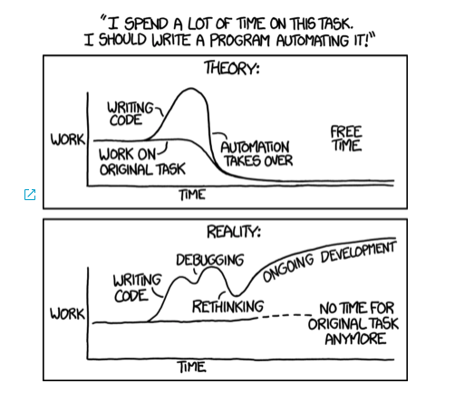

Created by Suresh krishnan Date 11-11-20
Infrastructure by Hands :)
As the name suggests, Infrastructure as Code uses code to provision, configure, and manage infrastructure.
This description is done using code, often using a declarative language. The language you use varies depending on the tools you use, from common scripting languages to Domain Specific Languages (DSL) provided by the tools.
And well things go out of hand

Configuration WebsiteTest {
Import-DscResource -ModuleName PsDesiredStateConfiguration
Node 'localhost' {
# The first resource block ensures that the Web-Server (IIS) feature is enabled.
WindowsFeature WebServer {
Ensure = "Present"
Name = "Web-Server"
}
}
}
# This playbook installs and enables IIS on Windows hosts
- name: Install IIS
hosts: all
gather_facts: false
tasks:
- name: Install IIS
win_feature:
name: "Web-Server"
state: present
restart: yes
include_sub_features: yes
include_management_tools: yes
terraform {
required_providers {
aws = {
source = "hashicorp/aws"
version = "~> 2.70"
}
}
}
provider "aws" {
profile = "default"
region = "us-west-2"
}
resource "aws_instance" "example" {
ami = "ami-830c94e3"
instance_type = "t2.micro"
}